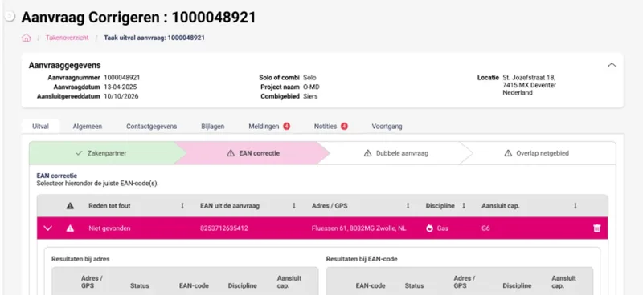
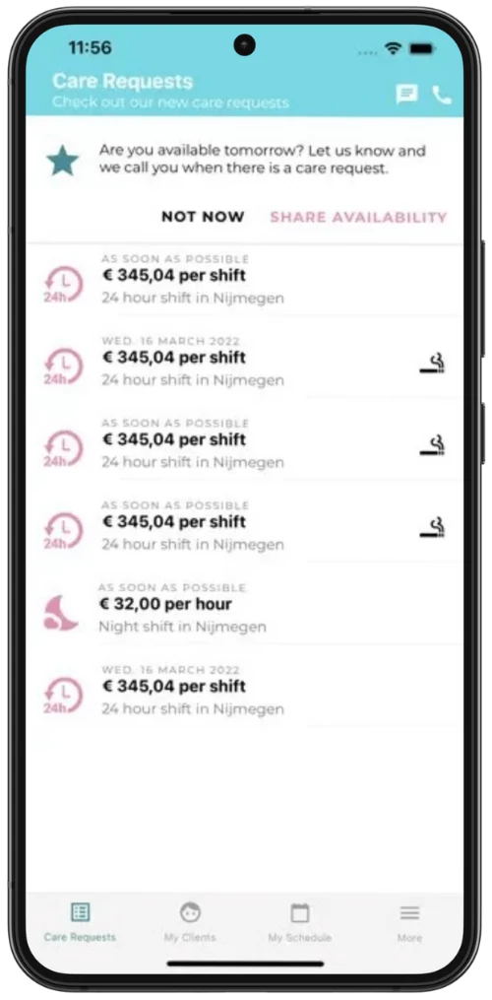

Open voor nieuwe kansen als senior UX-designer
Ik ontwerp de systemen waar mensen hun werkdag in doorbrengen.
Senior UX en product designer met ruim tien jaar ervaring. Ik werk aan interne platformen, klantportalen en apps bij onder andere ANVA, Enexis, NS en Onderlinge, van het eerste gesprek met gebruikers tot het design system waar development op bouwt.


Uitgelichte cases
Per case: het probleem, wat ik ontdekte, welke keuzes ik maakte en wat het opleverde.
Waar je me voor inschakelt
Product design
Van eerste interview tot getest prototype, voor werkprocessen met veel stappen en uitzonderingen.
Design systems
Tokens, componenten en governance die teams echt gebruiken.
Toegankelijkheid
WCAG AA als uitgangspunt, opgelost in de componenten zelf.
UX leadership
Teams en stakeholders achter één richting krijgen, en collega's coachen.
Van mensen met wie ik werkte
Lando begrijpt snel wat er speelt. Hij stelt scherpe vragen, brengt structuur aan in complexe vraagstukken en weet verschillende belangen samen te brengen.
Hij denkt niet alleen vanuit de gebruiker, maar houdt ook rekening met technische haalbaarheid. Daardoor sluiten zijn ontwerpen goed aan op de praktijk.
Lando neemt eigenaarschap en wacht niet af. Hij ziet waar kansen liggen, krijgt mensen mee en helpt teams betere keuzes te maken.
Samenwerken
Op zoek naar een senior designer voor je team?
Ik sta open voor een gesprek over een rol waarin product design, design systems en toegankelijkheid samenkomen. Een mail of LinkedIn-bericht is genoeg.